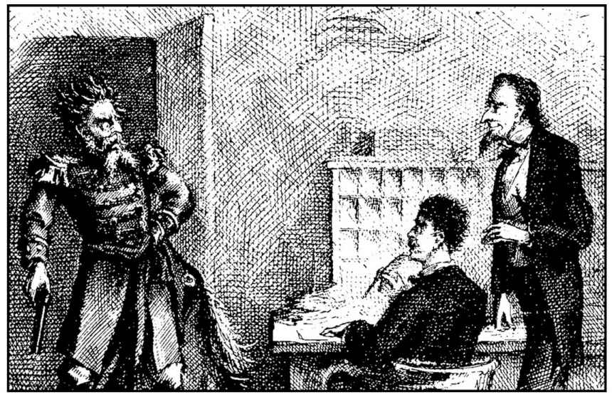

孟菲斯《雪崩报》主编，由于一位记者扬言他是一名激进分子，于是就这样出其不意，轻口薄舌地对那记者进行抨击：——当他在写第一个句子，刚写到当中部分，在他的i字母上头加上一点，在他的t字母上添上一横，再打上他的句号时，他就知道自己是在拼凑一个句子，那里面饱含有阴险的恶意，散发出造谣的恶臭。——《信息交换报》。
医生对我说，南方的气候会增强我的体质，于是我去了南方的田纳西州，在《朝花与约翰逊县呐喊报》里找了个职位，当上了该报的助理编辑。我去上班的那天，看见主编正斜靠在一张只剩下三条腿的椅子上，把一双脚跷在一张松木桌上。屋子里还有另一张松木桌，以及另一张病病歪歪的椅子，桌和椅都一半埋在报纸以及破碎或整张的稿件下。有一只盛沙的箱子[1]，上面丢了一些雪茄烟蒂，堆了许多“老兵”[2]，一只火炉，炉门内上边的铰链晃悠悠地悬荡着。主编身穿一件黑色长燕尾服大衣，下面配一条白麻布裤。他的那双靴子很小，用黑鞋油擦得很光洁。他穿一件有褶裥饰边的衬衫，戴一只大图章戒指，领子是那种老式的立领，格子花的领巾两头下垂，一套衣装是大约一八四八年流行的。他正在吸一支雪茄，一面在苦苦思索一个什么字，一面笨拙地理平刚被他搔过的乱蓬蓬的头发。他恶狠狠地蹙起眉头，我断定他这是在拼凑一篇不易措词的社论。他叫我把一些交换的报纸约略看一遍，然后写一篇《田纳西州报刊精粹》，要将各报所载的内容加以浓缩，并保留那些看来是有趣的材料。
于是我写了以下这篇文章：
田纳西州报刊精粹
《地震半月刊》的编辑们，显然是误解了有关巴利哈克铁路的报道。公司的目的，并不是要将布加德维尔划在铁路线以外，相反，他们认为它是沿线的重点之一，决不会忽略了它。《地震》的编辑先生们，当然会乐于做出更正。
希金斯维尔《晴天霹雳与自由呐喊》多才多艺的主编，约翰·W.布洛塞姆先生，昨天抵达本市。他现下榻于范伯伦旅馆。
我们注意到，同时期发行的报刊，如泥潭泉的《怒吼晨报》就误以为范·沃特当选一事尚属未定之天，但是，毫无疑问，在不曾收到这篇提示文章之前，他们就已经发现自己的错误了。不用说，他们是由于只掌握了不完全的选票统计数，从而做出了错误的判断。
有一条好消息让大家知道：布拉泽维尔市正竭力设法和纽约的几位绅士签订一项合同，要用尼科尔森筑路材料去铺那些几乎无法通行的街道。《欢呼日报》正全力推动这一措施，似乎对最后成功颇有把握。

我把以上拟好的文稿交给主编，随他采用，修改，或是干脆给撕了。他漫不经心地向它看了一眼，就沉下了脸。他接着一页一页往下看，他那神色更显得兆头不妙。看来分明是有什么地方不对头。紧接着他一下子跳起来说：
“必须破口大骂！你以为我提到那些畜生的时候，会这样写法呀？你以为我的订户看的时候，能受得了那份罪呀？把笔给我！”
我以前从未见过，修改文章时一支笔会那样发出刮擦的响声，或那样毫不留情地涂抹掉别人所写的动词和形容词。正当他加工的时候，有人从敞开的窗外朝他开了一枪，这一来我的一只耳朵就不再和另一只相对称了。
“啊，”他说，“是《精神火山报》的那个恶棍史密斯——昨天他就该来了。”接着他就从腰里拔出一只水兵用的手枪。史密斯应声倒地，大腿上中了一枪。当时他正准备再露一手，只是由于主编的这一枪而未能瞄准，却打伤了另一个局外人。那就是我。好在我只被打落了一个手指。
此后，主编继续涂抹，并在行与行间加上一些词句。他刚修改完毕，一颗手榴弹从火炉烟筒里落下来，爆炸时把火炉炸得粉碎。但是它并未造成更大的损害，只有一个横飞的碎片击落了我两颗牙齿。
“那火炉可是完全毁了。”主编说。
我说我相信确是如此。
“嗯，这没关系——现在这种天气已经再用不着它了。我知道干这件事的那个家伙。我会抓住他的。喂，这篇东西必须这样写。”
我接过了稿子。涂抹的地方和行间新加的词句，已使原稿面目全非。它的母亲再也无法认出它来了，如果它有一位母亲的话。现在它被改成这样：
田纳西州报刊精粹
修建巴克哈利铁路，是十九世纪中最光荣伟大的设想，显然《地震半月刊》那批说谎成性的家伙要在这一问题上竭力用他们另一套卑鄙无耻、令人难以忍受的谎言，去蒙蔽我们高尚正直的人们。说什么布加德维尔将被划在铁路线以外，这主意可是他们自己肮脏的脑子里想出来的——应当说，是从他们自认为是头脑的废渣子里榨出来的。如果他们想要保全自己已被群众唾弃的爬虫残骸，逃脱他们应该受到的一顿鞭子，那么他们最好还是趁早收回那套谎言吧。
希金斯维尔《晴天霹雳与自由呐喊》的布洛塞姆，那头笨驴，又窜到这里来，在范伯伦旅馆里白吃白喝。
我们注意到，泥潭泉《怒吼晨报》里那个愚昧无知的流氓无赖，那个生性爱造谣的家伙，正在宣布，说什么范·沃特没被选上。新闻工作者的天职是宣扬真理；是消除错误；是教育和启发群众，是提高公众道德与礼貌风度，是要使所有的人更加文雅，更加高尚，更加慈爱，在所有各方面变得更美好，更纯洁，更幸福；然而，这黑心的恶棍却不断地贬低他的伟大职责，散布谣言，从事诽谤，肆意漫骂，写出一些庸俗的文章。
说什么布拉泽维尔需要一条用尼科尔森筑路材料去铺几条街道——其实它需要的倒是多一所监狱，多一所贫民院。在那样一个乡村小镇里，那里只有两家小酒馆、一间铁匠铺，再有出那狗皮膏药[3]报纸的《欢呼日报》竟然想到要铺马路！主编《欢呼》的巴克纳，那只小爬虫，正像他一贯地那样愚昧无知，狂呼乱叫，鼓吹这件事情，同时还以为自己的话大有道理。
“瞧，就应当这样写——措词辛辣，一语中的。那种玉米粥加牛奶的新闻报道[4]，可叫我受不了。”
大约就在这时候，哗啦一声响，一块砖从窗外扔进来，狠狠地砸在我背上。我从射程内移开——我开始感觉到自己妨碍了人家。
主编说：“那可能是上校。我已经候了他两天了。他这就要上来啦。”
他猜对了。不一会儿，上校出现在门口，手里拿着一支龙骑兵手枪。
他说：“先生，我可以和编这份臭报的胆小鬼谈几句吗？”
“可以。请坐吧，先生。当心那张椅子，它缺了一条腿。我有幸和布拉泽斯凯特·特坎塞上校，那个下流的骗子谈几句吧？”
“谈吧，先生。我有一小笔账要和您清算一下。如果您有空，咱们这就开始吧。”
“我要写完一篇谈‘美国道德与智力发展令人鼓舞的进步’的文章，可是，这不用赶急。开始吧。”
两支枪同时猛烈震响。主编被崩落了一绺头发，上校的枪弹在我大腿肉多的地方结束了它的进程。上校本人的左肩被擦破了一点儿。他们再次开火。这次两人谁都没能击中对方，但我却分享了一枪，那枪击中了我的胳膊。第三次开火，两位先生都受了轻伤，我的一个手指节被打掉了。于是我说，我认为自己该出去散一会儿步了，因为这是关系到他们私人的事，我不便再继续参与。但两位先生都请求我留在那里，并保证我不会妨碍他们。
接着他们就一面重新装子弹，一面讨论选举和收成的事，而我则着手包扎我的伤口。没过多一会儿，他们又兴致勃勃地开火，而且每次射击都收到成效——但这里应当指出，那六发子弹中倒有五发都轮到了我的份儿。第六枪重创了上校，他不无幽默地说：这会儿他可要说“再见”了，因为他有事情得去镇上。于是他打听了怎样去殡仪馆，然后离开了。
主编转过身来对我说：“我约了几个人吃晚饭，得去张罗一下。劳您的驾，把校样看一看，还要接待几个来打交道的客人。”
我一听说要接待那些来打交道的客人，就有点儿发毛，可是那连续发射的枪声仍在我耳朵里嗡嗡作响，我惊魂未定，因此一时也想不出该说些什么。
他接着说：“琼斯三点钟到——给他一顿鞭子。吉莱斯皮也许要早一些来——把他从窗子里扔出去。弗格森大约四点钟到——把他给宰了吧。我想今天要做的就是这些了。如果有多余的时间，您可以写一篇措词尖锐的文章，谈谈警察局，挖苦一下那巡官长。牛皮鞭都在桌底下；武器在抽屉里——子弹在那边的角落里——棉花和绷带在那边文件格里。万一出了什么意外事故，到楼下去找兰塞特外科医生。他在咱们报上登广告——咱们用他的服务来抵账就完了。”
他走了。我直打哆嗦。此后三小时内，我经历了那样可怖的危险，以致我所有宁静的心情和喜悦的感觉都消失了。吉莱斯皮造访来了，把我从窗子里扔了出去。琼斯准时到来，我正准备抽一顿鞭子，他却为我代了劳。在和一位日程表上未经列出的生客交手中，我被剥去了头皮。又来了一位叫汤普森的生客，他让我全身只留下一堆乱七八糟的破布头儿。最后我负隅顽抗，遭到一群狂怒的编辑、骗子、政客和亡命之徒的围攻，他们语无伦次，恶毒咒骂，紧接近我头顶四周挥舞他们的武器，到后来只见四下里犹如闪着刀光剑影，我刚要写辞呈，主编到了，和他一同来的是乱哄哄一群热情洋溢、似乎有魔法保护的朋友。接着就展开了一场骚乱和屠杀，那是人类的一支笔，哪怕是钢铁铸就的笔，所无法描绘的。一些人被枪击，被刀戳，被肢解，被轰炸，被从窗口扔了出去。经过片刻旋风般骚动，只听到模糊不清的下流谩骂，影影绰绰看到混乱和狂烈的战斗舞[5]，然后一切告终。五分钟后，四下沉寂，只留下了我和那血淋淋的主编坐在那里，打量我们四周围地上乱糟糟满是鲜血淋漓的劫后残余。
他说：“等您习惯了，您会喜欢这地方的。”
我说：“我必须请您原谅；我想，再过一个时期，也许我可以写出合您意的东西；只要经过一阵实习，学会那种措词，相信我是能做到的。可是，不瞒您说，那种强烈的措词也有它的麻烦，它会给你招来干扰。这一点您也明白。不用说，写那种强有力的文章，是为了鼓舞群众的精神。但是我不喜欢它引起过多的注意。像我今天这样受到很大的干扰，我就设法定下心来写文章。我很喜欢这个职位，但是我不喜欢留在这儿接待那些来打交道的客人。我得承认，这种经历是新鲜的，也是相当有趣的，然而它们对我可不大公道。一位绅士从窗外打了您一枪，可是他让我受了伤；一颗手榴弹从烟筒里落下，原是为了让您获得满足的，却把炉门崩在我的脖子上；一位朋友造访，来问候您，却让弹片把我害得体无完肤，以致我身上的皮都不再顶用了；您去赴宴，琼斯带着他的牛皮鞭来了，吉莱斯皮把我从窗口扔了出去，汤普森扯碎了我一身的衣服，一位素昧平生的客人，像一位老朋友那样熟不拘礼，剥掉了我的头皮；过了不到五分钟，这带地方所有的流氓无赖都用战斗颜料[6]抹了花脸来到了，开始用战斧把我吓得魂不附体。总而言之，我这一辈子从来不曾见过这样的热闹场面。不，我喜欢您，我喜欢您那样冷静地、沉着地向来客说明问题，可是您瞧，我不习惯这一切；南方人感情太容易冲动；南方人对来客过于慷慨大方。今天我写的那几段文章，那些平淡乏味的句子，经过您那高超的手笔，注入那份田纳西州新闻工作的热情，是会惹动另一窠马蜂的。所有那帮子编辑又会赶来——再说，他们又是饿着肚子来的，要找一些人当早餐充饥。我不得不向您道别。我婉谢参加这样狂欢热闹场面。我原是为了要增强体质，才来到南方，现在，为了完成同一任务，我要回去，而且是说去就去，田纳西州的新闻工作，对我来说是太刺激了。”
说完这些话，我们彼此黯然别离。我却住进了医院病房。
约一八七一年
[1] 当时人写完信或文稿，为求其速干，常洒上黄沙，然后拂去，同后来的吸墨水纸。
[3] 原文Mustard-Plaster，是一种用芥子末制的药膏，可用来使贴膏药处发红，起反抗刺激作用。
[5] 某些部落，临战前准备，或战后庆祝胜利时，作为一种仪式，举行的集体舞蹈。
[6] 某些美洲印第安人部落，出战前在脸上和身上涂抹的颜料。
注 释
[1] 当时人写完信或文稿，为求其速干，常洒上黄沙，然后拂去，同后来的吸墨水纸。
[2] 俚语，指空瓶，尤其是啤酒或威士忌酒瓶。
[3] 原文Mustard-Plaster，是一种用芥子末制的药膏，可用来使贴膏药处发红，起反抗刺激作用。
[4] 喻软弱无力、富有伤感情调的文章。
[5] 某些部落，临战前准备，或战后庆祝胜利时，作为一种仪式，举行的集体舞蹈。
[6] 某些美洲印第安人部落，出战前在脸上和身上涂抹的颜料。